Attendtools User Guide
v1.0, 2011-09-28, Chris Greenhalgh
School of Computer Science, University of Nottingham
Overview
This block provides a way to register attendance at a physical session such as a lecture or lab.
A teacher or administrator uses the session management interface to
define the session, including the maximum number of attendees. They
then generate and print than number of paper code slips. These
are handed out in the session, one per attendee. Each code slip has the
session number and a unique code printed on it. After (or during) the
session, each attendee goes to the registration web page and enters the
session number, unique code and their own user name. This registers
their attendance at the session. Afterwards the teacher or
administrator can view the registered attendees, and export attendance
data for all sessions.
The current version does NOT require that students have accounts on
Moodle, and does NOT link directly to Moodle courses or activities;
this reflects the current development/deployment situation. It is
anticipated that future versions could: create missing student accounts
on registering; enrol students in courses on registering; push
attendance information to course-specific activities (i.e. the
Attendance module); provide reports of attendance linked to specific
Moodle accounts, courses or cohorts. It is also anticipated that other
methods of registering attendance might be supported in future
versions, e.g. individual RFID/barcode card registration in the
session, paper-based sign-up, self-registration.
Discussion
Each code can only be used once, so provided only (say) 10 codes are
handed out to 10 attendees then only 10 attendances can be registered.
An attendee can give their (unused) code to someone else, who can
register as attending. An attendee can also provide someone else's user
name when registering.However the attendee is then unable to register their own attendance.
If an attendee loses their code or forgets about it then their attendance will not be registered.
Consequently, the effectiveness of the system depends on balanced incentives (a) for attendees to register their own
attendance (b) but without creating a significant market for unused
codes (i.e. where claimed attendance might be much more valuable to
some non-attendees than to some attendees).
Availability
The source for the block is currently available from: https://github.com/cgreenhalgh/moodle-block_attendtools.
It is currently being developed/tested with Moodle version 2.1.
Installation
Installation is standard, i.e.
- download the complete source (above) and move/rename to the folder blocks/attendtools within the moodle installation.
- as administrator, view the Site administration > Notifications page, and press Upgrade when prompted.
Configuration and management
Configuration and management currently requires the capability block/attendtools:managesessions, which is associated with the admin role (only) by default.
The block has a configuration screen in the admin menu:
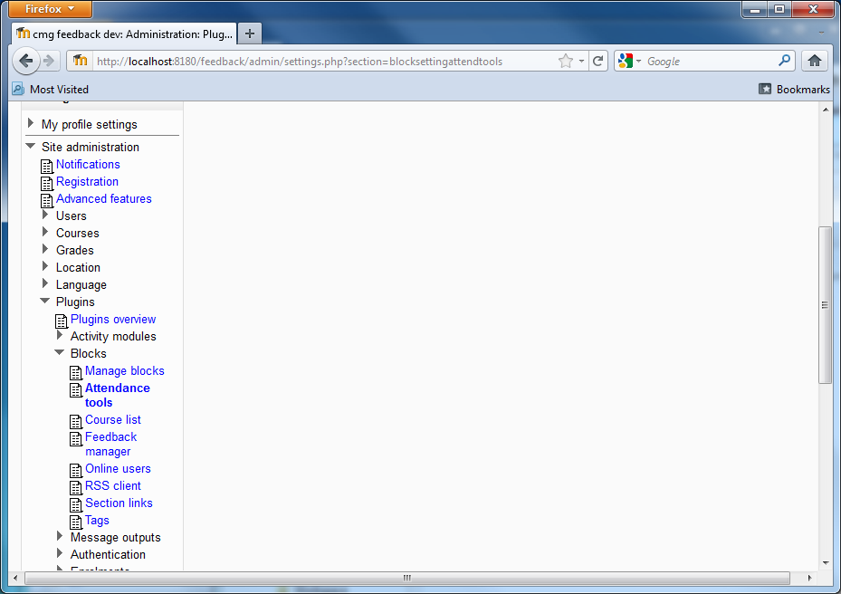
Currently there are no common block settings, but a link to a page for managing sessions:
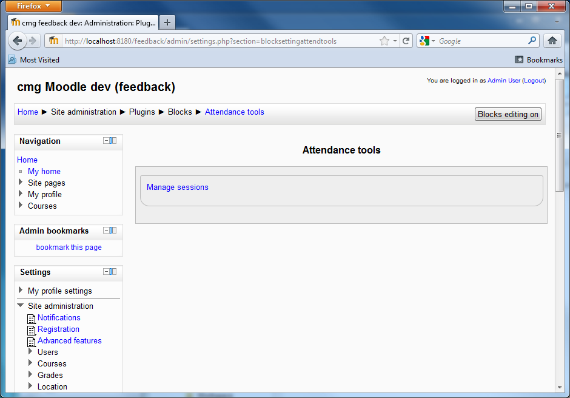
Optionally, an instance of the attendtools block can be added to the
site, e.g. to the default My Moodle page. This just provides a link to
the register attendance page.
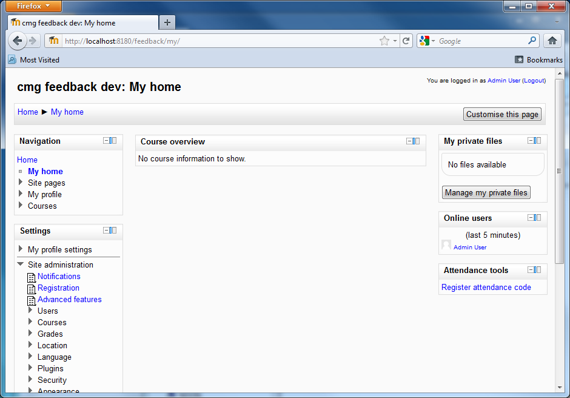
The manage settings page lists the existing settings, and provides links to actions:
- edit a session
- view information about a session (including attendance)
- print the codes for a session
- add a new session
- export attendance information for all sessions
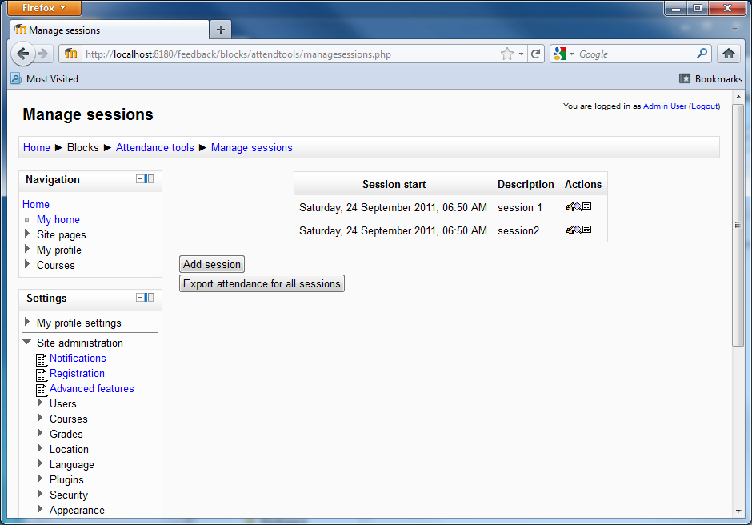
The add/edit session screen allows a session (i.e. at which attendance will be monitored) to be set up:
 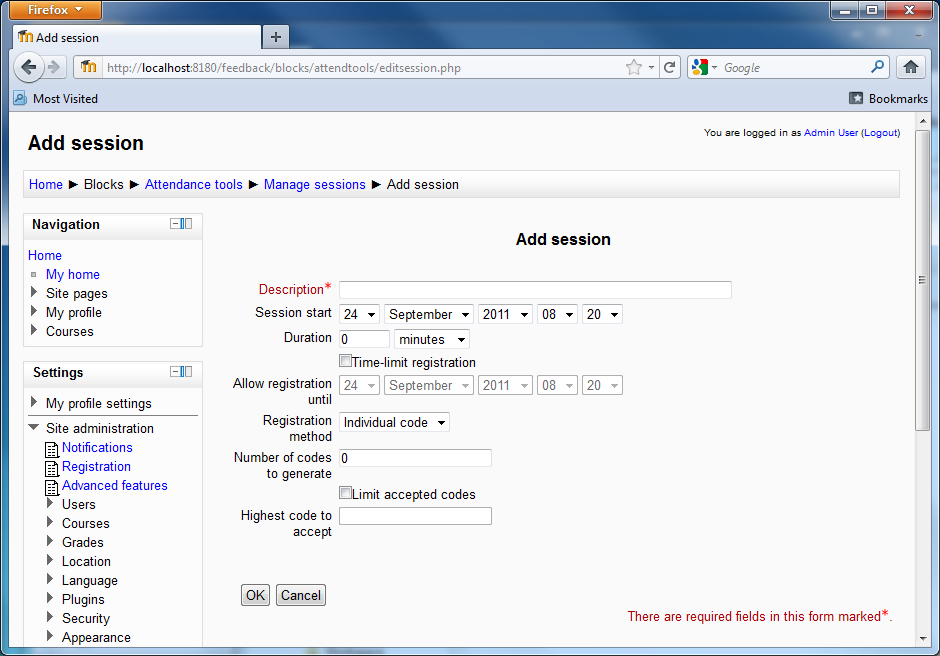
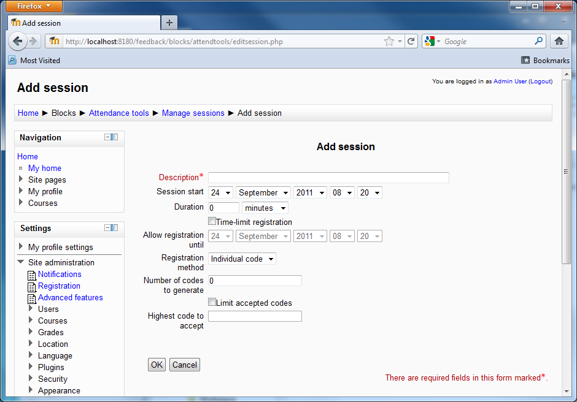
A session is specified by:
- description, i.e. a generally meaningful title for the session (as far as attendance monitoring is concerned)
- the date and time of the session
- the session duration (not actually used at present, but included for future compatibility with the Attendance module)
- an optional date/time after which attendance at the session cannot be registered
- the method of registering attendance, currently only 'Individual code'
- and, specifically for the Individual code method:
- the number of codes to generate, i.e. the maximum number of people who might attend the session
- an optional (lower) cap on the codes that will be accepted
(e.g. if 200 are printed, but only the first 120 are given out then
this should be set after the session to 120)
The session view gives summary information about the session and the list of currently registered attendees:
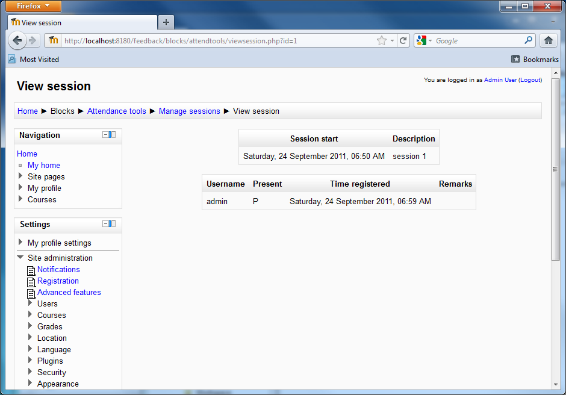
The print codes option first shows a confirmation dialog, which is
different for the first time codes are printed (and generated) vs
subsequent occasions:
Optionally, an instance of the attendtools block can be added to the site, e.g. to the default My Moodle page:
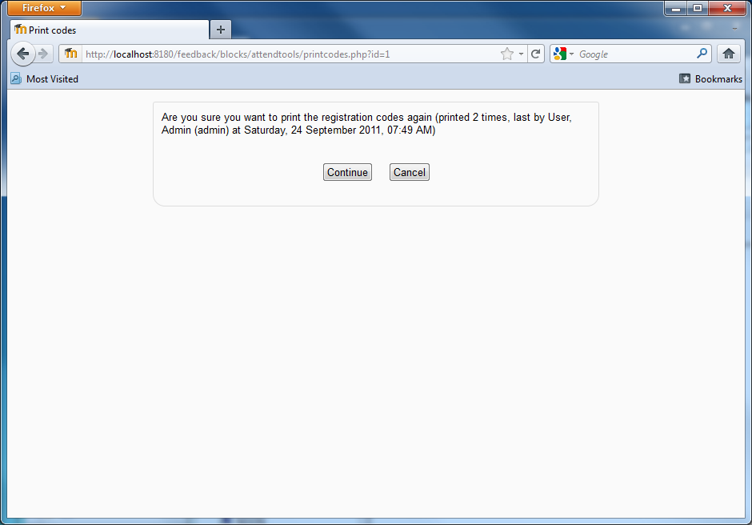
This is because each code can only be used once, so if the same codes
are printed more than once and two people end up with the same code
then only one of them will be able to register. So great care must be
taken that codes are only printed and distributed once!
The printable codes look like this:
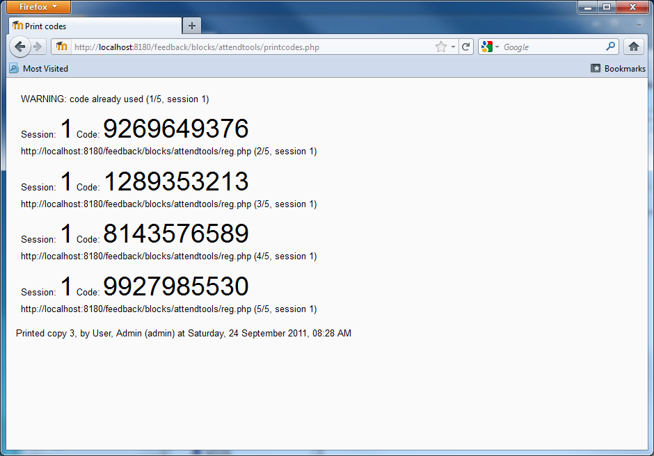
These should be printed, cut into separate strips, and handed out, one per attendee (and preferably in order) in the session.
Registering attendance
The URL for the register attendance page is printed on each code
slip and also provided in the attendtools block (if added to the site -
see above).
To register attendance, a students does NOT need an account on the Moodle server.
This is a simple form which requires:
- the session number - from the printed code slip
- the code - from the printed code slip
- the student's user name
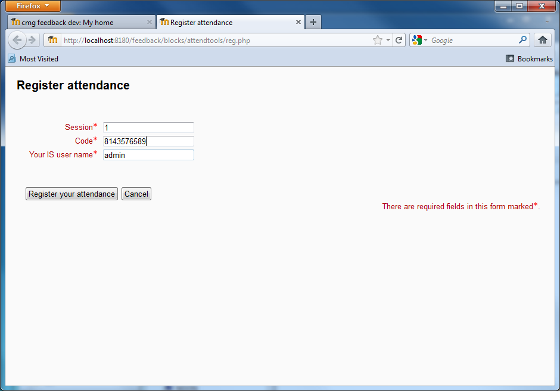
On successful registration a confirmation message is given:
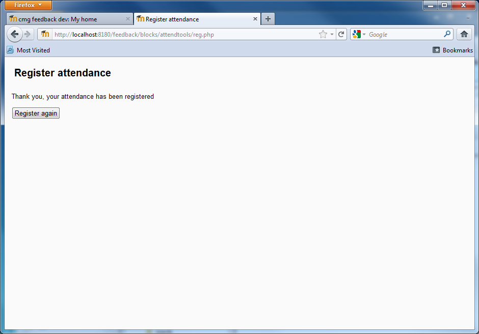
A variety of checks are made, which can result in several other responses:
- Thank you, you have already registered your attendance using this code
- Thank you, you have already registered your attendance using another code
- Sorry, this code has already been used by someone else
- Sorry, this code has been stopped by the teacher (if its sequence
number is greater than optional maximum specified when creating/editing
the session)
- Sorry, it is too late to register attendance at this session (if it is after the optional latest registration date/time)
The system also tracks entry of incorrect codes, and temporarily blocks
usernames and ipaddresses if they are used with several incorrect codes
in a short period of time (e.g. if someone is trying to guess a valid
code):
- Sorry, this username has been used in several recent incorrect
registration attempts and is termporarily blocked; please try again in
about 10 minutes
- Sorry, this computer has been used in several recent incorrect
registration attempts and is termporarily blocked; please try again in
about 10 minutes
Known issues
- Sessions cannot be deleted from the user interface
- A student could mistype their username
History
- First version, 2011-09-28, by Chris Greenhalgh, School of Computer Science, The University of Nottingham